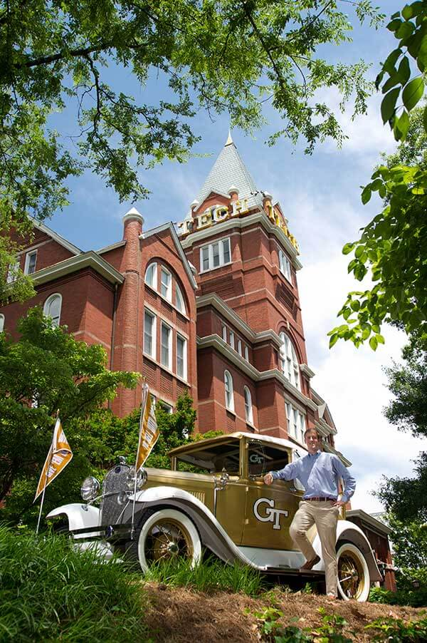
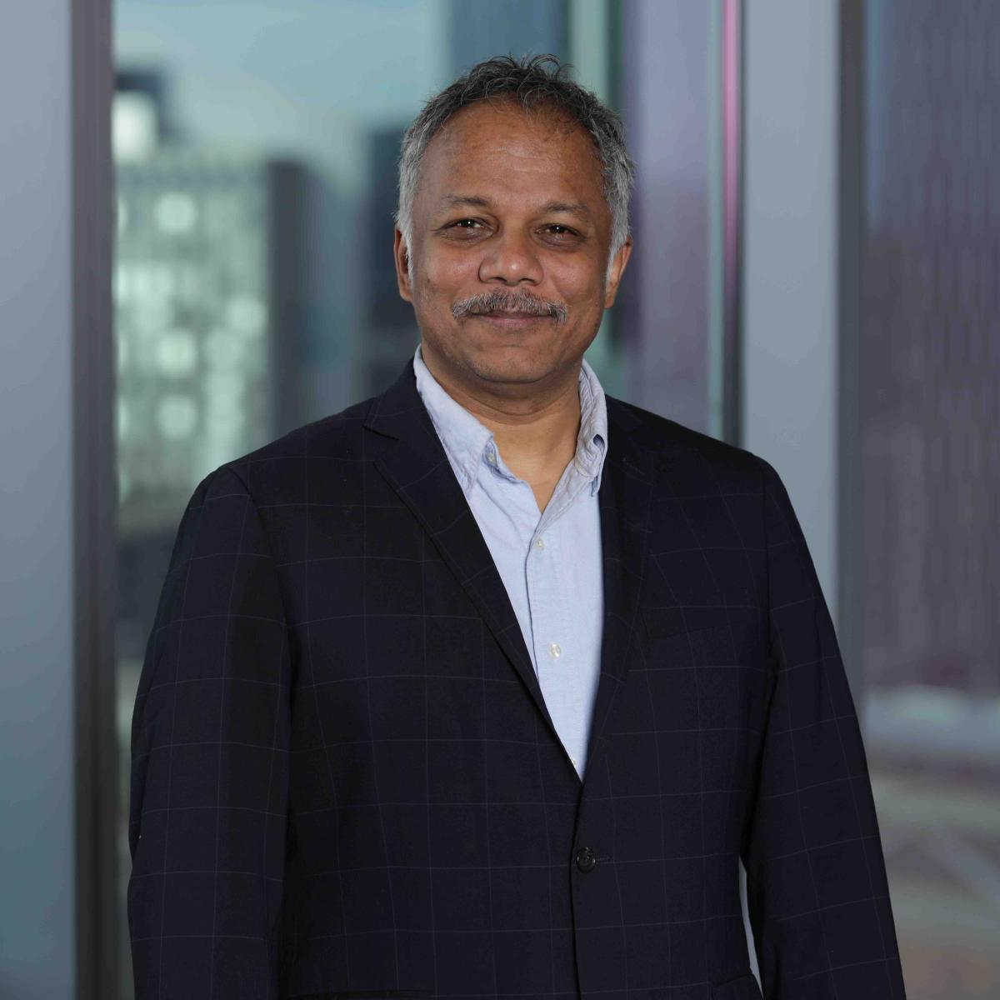
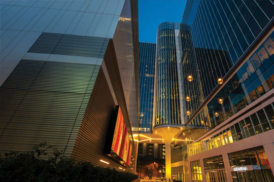

Wireless systems, signal processing, and the networks that carry information.
About the lab
The Signal Lab is a research group in the School of Electrical and Computer Engineering at the Georgia Institute of Technology. The group studies how information moves through wireless and networked systems, and how those systems can be designed to be more capable and more reliable.
This page is a starting point for the lab website. Research summaries, publications, and student profiles will be added as the group settles in.
Director: Sriram Vishwanath, Professor and Ken Byers Chair in Telecommunications

Tech Tower and the Ramblin' Wreck
Research
The lab’s interests follow Professor Vishwanath’s work in communications, wireless networks, and machine learning. Project pages will replace these placeholders.
Wireless systems
Multi-antenna and full-duplex communication, interference, and the practical limits of wireless links.
Signal processing
Information theory, network coding, and methods for sending data efficiently and reliably.
Learning and infrastructure
Large-scale machine learning and decentralized platforms for critical infrastructure, manufacturing, and automation.
People

Sriram Vishwanath
Professor and Director
Georgia Research Alliance Eminent Scholar Ken Byers Chair in Telecommunications
Professor Vishwanath studies wireless systems, decentralized infrastructure, and artificial intelligence, with an emphasis on bridging theory and practice. He earned his Ph.D. at Stanford University, his M.S. at Caltech, and his B.Tech. at IIT Madras.
Student, postdoc, and staff profiles will be listed here.

Technology Square, Georgia Tech
Contact
For questions about the lab, write to the director.
Sriram Vishwanath sriram@ece.gatech.edu
Cent, Room 5120
School of Electrical and Computer Engineering
Georgia Institute of Technology
Atlanta, GA 30332